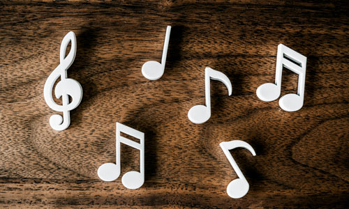

Clasificación de la Música
La música puede clasificarse de muchas maneras según su contexto y función. A continuación, te presentamos los principales tipos de música:
Música Popular
La música popular comprende las manifestaciones musicales propias del folklore y la tradición. Se caracteriza por transmitirse de generación en generación y no siempre tiene un autor determinado. Suele estar vinculada con la historia regional y a menudo va acompañada de baile o danza.
Música Académica
La música académica es la que proviene de la tradición musical de las élites de Europa Occidental. También se le llama música clásica (aunque sea medieval o de compositores vanguardistas), porque el período clásico se consideró un modelo de excelencia para las academias, conservatorios e instituciones de enseñanza musical profesional.
Música Comercial
La música comercial es la música consumida por el público de manera masiva, y es la que impulsa mayormente la industria musical. Abarca múltiples géneros, corrientes y estilos.
Música Ceremonial
La música ceremonial es la que se utiliza en celebraciones y rituales con una función fundamentalmente simbólica. Es el caso de las marchas fúnebres, las marchas nacionales, la música religiosa, entre otras.
Música Publicitaria
La música publicitaria es la que acompaña a los anuncios publicitarios o sirve de cortina a programas televisivos y shows radiales. Suele ser anónima y formar parte del patrimonio de una empresa o de los productores del show. No se realiza con un propósito estético ni es considerada por su valor artístico.